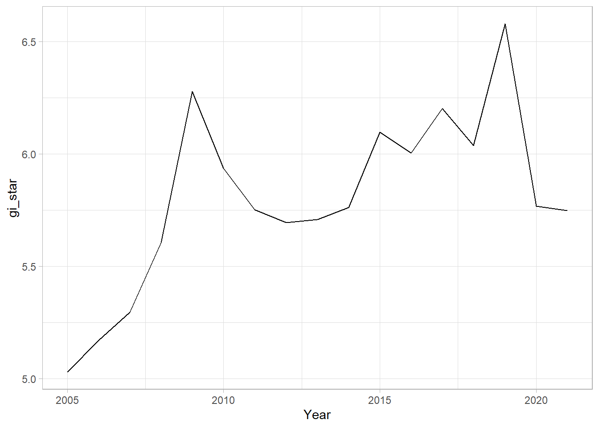
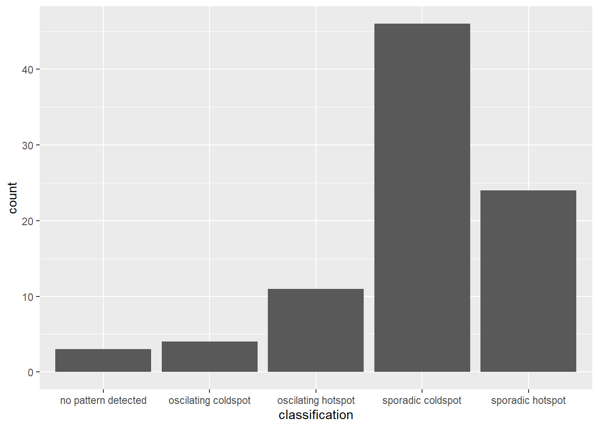
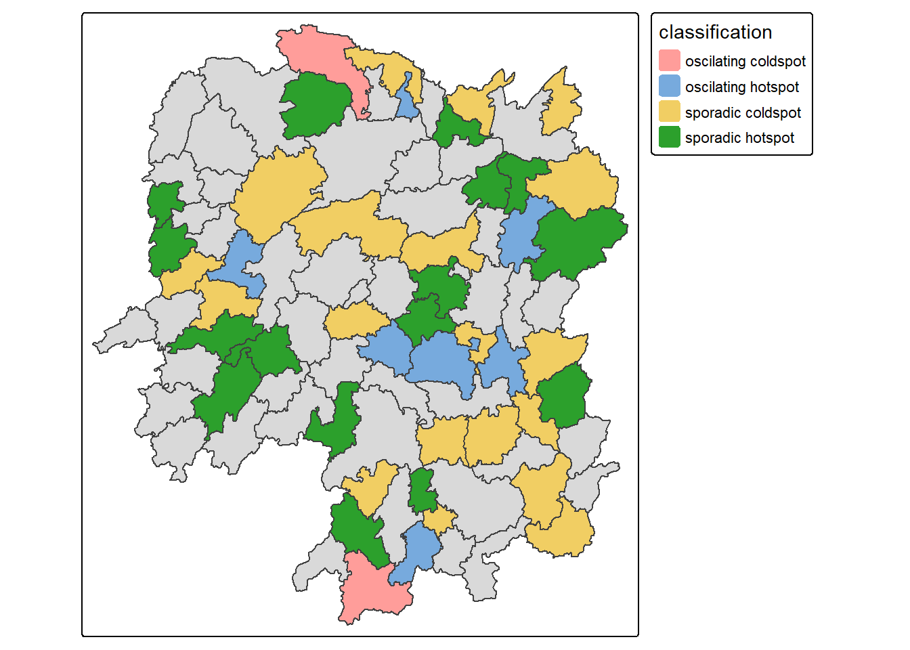

pacman::p_load(sf, sfdep, tmap,
plotly, tidyverse,
Kendall)In-class-ex06
Package Loading
Import data
hunan <- st_read(
dsn = "data/geospatial",
layer = "Hunan") %>%
st_transform(crs = 32650)Reading layer `Hunan' from data source
`E:\JUNCHENLI\ISSS626_GAA\In_Class_Ex\In-class-ex06\data\geospatial'
using driver `ESRI Shapefile'
Simple feature collection with 88 features and 7 fields
Geometry type: POLYGON
Dimension: XY
Bounding box: xmin: 108.7831 ymin: 24.6342 xmax: 114.2544 ymax: 30.12812
Geodetic CRS: WGS 84Importing attribute table
GDPPC <- read_csv(
"data/aspatial/Hunan_GDPPC.csv")Creating a Time Series Cube
GDPPC_st <- spacetime(GDPPC, hunan,
.loc_col = "County",
.time_col = "Year")is_spacetime_cube(GDPPC_st)[1] TRUEDeriving the spatial weights
GDPPC_nb <- GDPPC_st %>%
activate("geometry") %>%
mutate(nb = include_self(
st_contiguity(geometry)),
wt = st_inverse_distance(nb,
geometry,
scale = 1,
alpha = 1),
.before = 1) %>%
set_nbs("nb") %>%
set_wts("wt")Computing Gi*
gi_stars <- GDPPC_nb %>%
group_by(Year) %>%
mutate(gi_star = local_gstar_perm(
GDPPC, nb, wt)) %>%
tidyr::unnest(gi_star)Mann-Kendall Test on Gi
cbg <- gi_stars %>%
ungroup() %>%
filter(County == "Changsha") |>
select(County, Year, gi_star)ggplot(data = cbg,
aes(x = Year,
y = gi_star)) +
geom_line() +
theme_light()
Interactive Mann-Kendall Plot
p <- ggplot(data = cbg,
aes(x = Year,
y = gi_star)) +
geom_line() +
theme_light()
ggplotly(p)Printing Mann-Kendall test report
cbg %>%
summarise(mk = list(
unclass(
Kendall::MannKendall(gi_star)))) %>%
tidyr::unnest_wider(mk)# A tibble: 1 × 5
tau sl S D varS
<dbl> <dbl> <dbl> <dbl> <dbl>
1 0.485 0.00742 66 136. 589.Mann-Kendall test data.frame
ehsa <- gi_stars %>%
group_by(County) %>%
summarise(mk = list(
unclass(
Kendall::MannKendall(gi_star)))) %>%
tidyr::unnest_wider(mk)
head(ehsa)# A tibble: 6 × 6
County tau sl S D varS
<chr> <dbl> <dbl> <dbl> <dbl> <dbl>
1 Anhua 0.191 0.303 26 136. 589.
2 Anren -0.294 0.108 -40 136. 589.
3 Anxiang 0 1 0 136. 589.
4 Baojing -0.691 0.000128 -94 136. 589.
5 Chaling -0.0882 0.650 -12 136. 589.
6 Changning -0.750 0.0000318 -102 136. 589.Mann-Kendall test data.frame
emerging <- ehsa %>%
arrange(sl, abs(tau)) %>%
slice(1:10)
head(emerging)# A tibble: 6 × 6
County tau sl S D varS
<chr> <dbl> <dbl> <dbl> <dbl> <dbl>
1 Shuangfeng 0.868 0.00000143 118 136. 589.
2 Xiangtan 0.868 0.00000143 118 136. 589.
3 Xiangxiang 0.868 0.00000143 118 136. 589.
4 Chengbu -0.824 0.00000482 -112 136. 589.
5 Dongan -0.824 0.00000482 -112 136. 589.
6 Wugang -0.809 0.00000712 -110 136. 589.Performing Emerging Hotspot Analysis
ehsa <- emerging_hotspot_analysis(
x = GDPPC_st,
.var = "GDPPC",
k = 1,
nsim = 99
)Visualising the distribution of EHSA classes
ggplot(data = ehsa,
aes(x = classification)) +
geom_bar()
Visualising EHSA
hunan_ehsa <- hunan %>%
left_join(ehsa,
by = join_by(County == location))ehsa_sig <- hunan_ehsa %>%
filter(p_value < 0.05)
tmap_mode("plot")
tm_shape(hunan_ehsa) +
tm_polygons() +
tm_borders(fill_alpha = 0.5) +
tm_shape(ehsa_sig) +
tm_fill("classification") +
tm_borders(fill_alpha = 0.4)